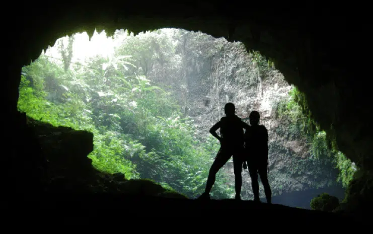
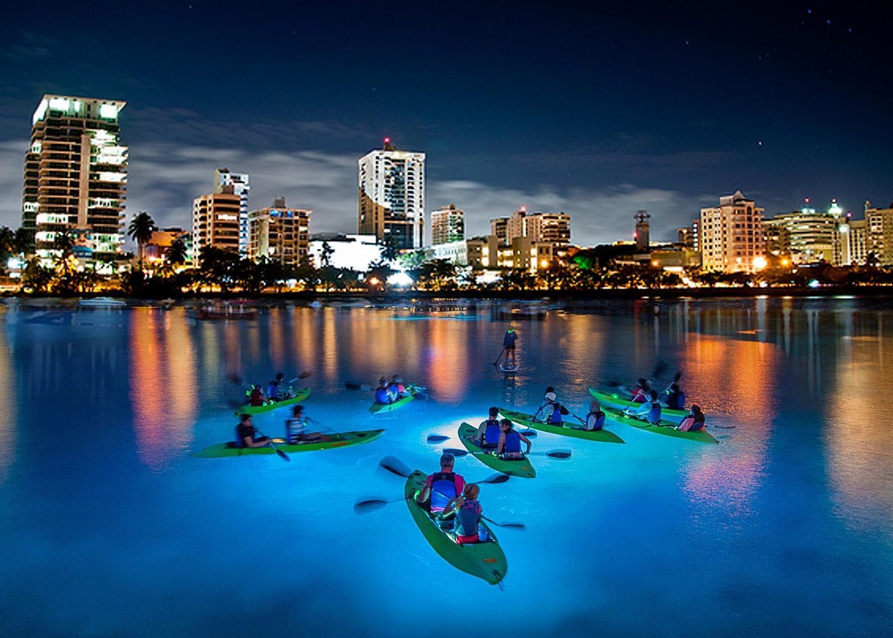

The Camuy Caves make up the largest underground cave system in Puerto Rico, and exploring them is something worth adding to your Puerto Rico outdoor activities.
See the city lights of Puerto Rico on this night kayak excursion on the Condado Lagoon. You’ll be in a clear bottom kayak equipped with LED lights, which you’ll turn on when the sun goes down. You can also paint your face and body with glow in the dark paint, so you’ll light up when the sun goes down, too. Have a blast seeing Puerto Rico in a whole new way.
El Yunque National Forest is the only tropical rainforest in the United States Forest System and has multiple hiking trails that vary in levels of difficulty.

Ziplining is a popular activity in Puerto Rico, and you’ll find the longest zipline in America in Orocovis.
This zipline known as “The Monster” is 2.5km (2530m, 8300ft, 1.57mi) long and you can ride it superman-style through the mountains.

Snorkeling in Puerto Rico is an out-of-this-world experience!
Visit the Tres Palmas Marine Reserve in Rincón to see one of the largest elkhorn coral communities in the Caribbean.